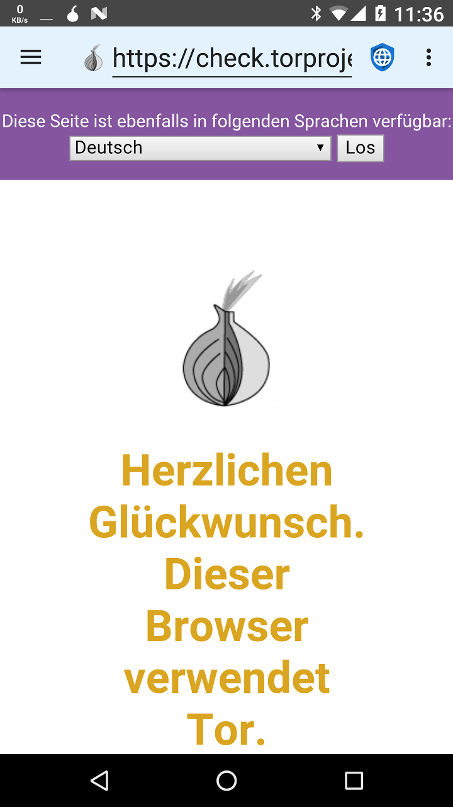

Faktoren, die die Privatsphäre im Web einschränken wollen, lassen sich hauptsächlich in zwei verschiedene Kategorien unterteilen: Neugierige Behörden mit Zugriff auf Internetprovider und grosse Konzerne, die "soziale" und Werbe-Netzwerke betreiben. TOR (The Onion Router) ist nützlich, wenn es auf den Schutz der Privatsphäre vor neugierigen Behörden ankommt, nicht jedoch bei Konzernen bzw. Megafirmen.
Oft spähen neugierige Behörden Bürger aus, um Fehlverhalten und Menschenrechtsaktivitäten zu bestrafen. Üblicherweise betreiben sie entweder die Internetprovider selbst oder sie können Provider dazu zwingen, Informationen über jede besuchte IP-Adresse und die zugehörigen Benutzer herauszugeben. TOR wurde entwickelt, um diese Eingriffe in die Privatsphäre zu bekämpfen, indem es die Daten verschlüsselt, die ein Nutzer sendet und sie durch viele verschiedene Server schleust, bevor sie die Zieladresse erreichen. Das bedeutet, dass kein individueller Internetprovider, Server oder Website sowohl die IP-Adresse des Nutzers als auch die IP-Adresse des letztendlich besuchten Webservers erfährt. Neugierige Behörden und die von ihnen kontrollierten Internetprovider können nur vermuten, welche Webserver ein Benutzer besucht, da sie letztendlich nur sehen, dass er TOR benutzt. In einigen Teilen der Welt könnte das Benutzen von TOR als illegale Aktivität ausgelegt werden ("wenn Du nichts zu verstecken hättest, würdest Du nicht Deinen Traffic vor uns verstecken") und Benutzer könnten bestraft werden, da die Regierung vermutet, sie würden etwas Untersagtes tun. Also kann TOR hilfreich sein, ein Allheilmittel ist es jedoch nicht.
Wenn ein Benutzer sich mit einem Webserver verbindet, kann der Webserver seine IP-Adresse sehen. Obwohl es keine ausgereifte Methode ist, können IP-Adressen in physische Adressen umgewandelt werden - mit erstaunlicher Genauigkeit. Kleine Webserver nutzen normalerweise die IP-Adresse, um festzulegen, woher der Benutzer die Seite besucht. TOR ist eine gute Lösung, wenn man seinen Standort vor diesen Servern verstecken möchte. Große Megafirmen, die "soziale" und Werbe-Netzwerke betreiben, nutzen jedoch Profile an Informationen, um Benutzer über ihre Geräte und IP-Adressen hinweg zu tracken. Diese Profile nutzen verschiedene Techniken um Benutzer ausfindig zu machen, inklusive JavaScript, Cookies, Tracking-IDs und den sogenannten "Browser-Fingerabdruck" (fingerprinting). Weil die große Mehrheit der Websites im Internet Werbung entweder von den großen Werbenetzwerken oder von eingebetteten Social-Media-Buttons mit ihrem zugewiesenen JavaScript lädt, haben die großen Megafirmen Profile von so gut wie jedem Internetnutzer angefertigt und verfolgen deren Aktivitäten über zueinander unabhängige Seiten.
Sie verfolgen jede besuchte Seite, Alles online Gekaufte, jede für Einkäufe genutzte Kreditkarte, jede Adresse, an die Waren verschickt werden, und die GPS-Metadaten von jedem ins Internet hochgeladene Foto. Sie fertigen Profile an, die Alter, Geschlecht, Beziehungsstatus, Adresse, politische und religiöse Ansichten, familiäre Umstände, Anzahl der Haustiere und alles Andere, was sie über einen Nutzer herausfinden können, beinhalten. Sie kaufen sogar ganze Datenbanken mit Informationen über Kreditkartennutzungen in Geschäften auf, damit sie Offline-Einkaufsverhalten von Nutzern in ihren Profilen nachverfolgen können. Weil sie bereits weitaus genauere Adressinformationen über einen Nutzer haben, als eine IP-Adresse aussagt, bietet TOR keinen echten Schutz der Privatsphäre gegen derartige Megafirmen.
Der einzige und beste Schutz der Privatsphäre gegen Megafirmen ist es, mit deaktivieren JavaScript durchs Web zu surfen, gefolgt von geblockten Werbenetzwerken, deaktivierten Cookies und DOM-Speicher und das Benutzen eines Browsers, der schwierig zu "fingerprinten" ist.
Neben den vorhin genannten Einschränkungen kann TOR in bestimmten Situationen hilfreich sein. Das TOR Project bietet eine App für Android namens Orbot an, die auf F-Droid verfügbar ist und überall sonst, wo Privacy Browser angeboten wird. Privacy Browser hat eine Option, um Orbot als Proxy zu benutzen. Wenn diese aktiviert wird, hat Privacy Browser einen hellblauen Hintergrund für die Adresszeile statt dem standardmäßigen Hellgrau. Wenn Privacy Browsers Orbot-Proxy-Einstellung aktiviert ist, wird das Internet ausschließlich funktionieren, solange Orbot ausgeführt und mit dem TOR-Netzwerk verbunden ist. Weil die Daten durch verschiedene Anlaufstellen geleitet werden, ist das Nutzen von TOR oft weitaus langsamer als bei einer direkten Verbindung mit dem Internet.
Wenn Orbot im Proxy-Modus genutzt wird, werden zwar beim Surfen mit dem Privacy Browser die Daten über das TOR-Netzwerk geroutet, nicht jedoch heruntergeladene Dateien. Die Ursache dafür ist, dass Privacy Browser den in Android eingebauten Download-Manager verwendet, der keine Proxy-Optionen hat. Benutzer, die auch Dateien über Orbot herunterladen möchten, müssen daher dessen VPN-Modus aktivieren.